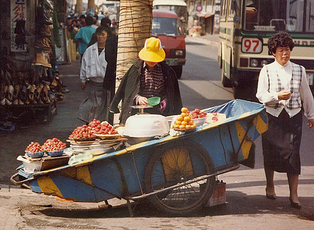
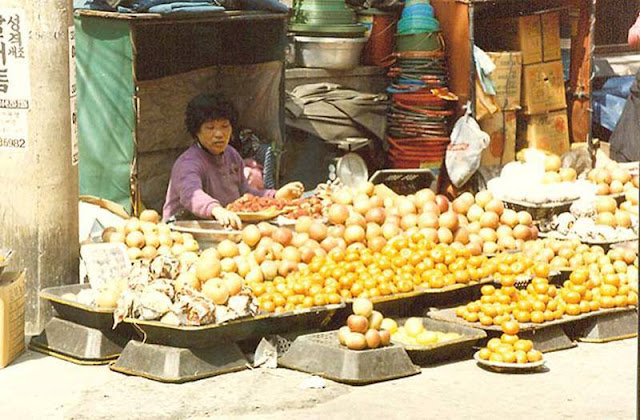
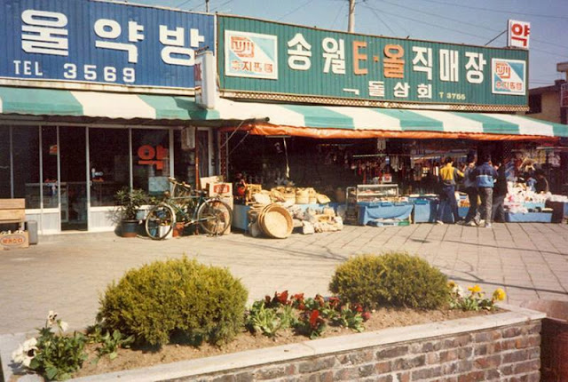
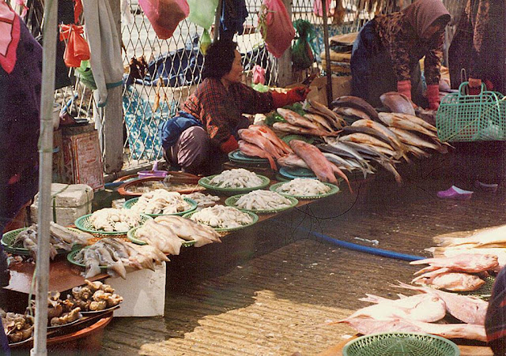
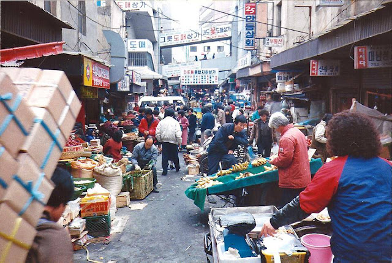
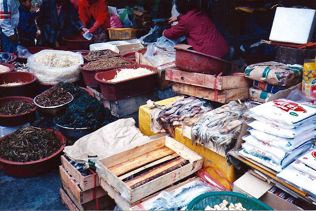

From a Korean home kitchen to modern tables around the world.
OGAM is built on a simple idea: authentic Korean flavours should be easy to enjoy, wherever you live. Each bottle is crafted to capture the depth, balance and warmth of Korean home cooking — without long ingredient lists or complicated techniques.
Our sauces are designed to be versatile: pour over grilled meats, toss through vegetables, glaze roasted dishes or use as a dipping sauce. Whether it’s a quick midweek meal or a table full of shared plates, OGAM brings a little more flavour to everyday cooking.
From the first recipe tests in Jay’s kitchen to the bottles now on shelves, the focus has stayed the same: real flavour, honest ingredients and food that brings people together.
OGAM is more than a sauce brand — it’s a bridge between heritage and modern cooking, between Korean tradition and global kitchens.

Bustling markets, tiny home kitchens and shared meals — this was the Korea Jay grew up in, full of bold flavours and warmth.

The dishes of this era were simple, slow‑cooked and rooted in family tradition. These are the flavours that shaped OGAM.

Vibrant markets, neon signs and the hum of daily life inspired the depth and character behind OGAM’s sauces.

Meals were made to be shared — big pots, bold flavours and recipes passed from one generation to the next.

Vendors, street food and the smell of grilling meats filled the air — the heart of Korean flavour.

These memories and flavours are the foundation of OGAM — a bridge between heritage and modern cooking.